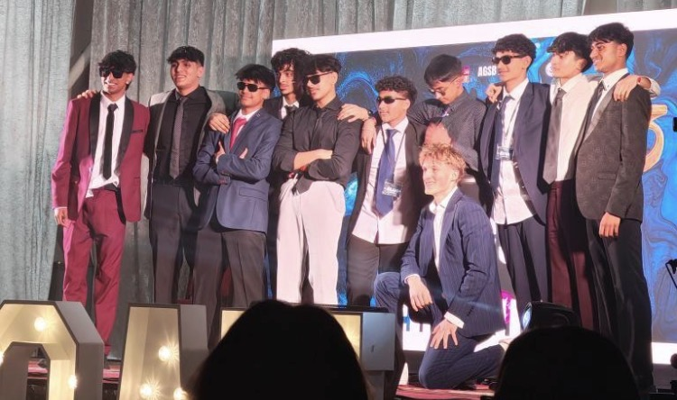
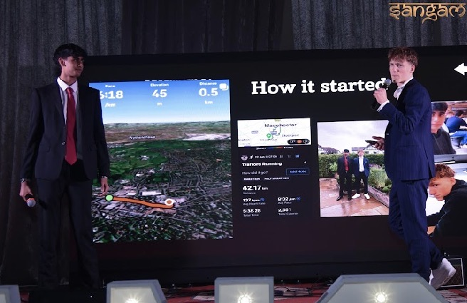
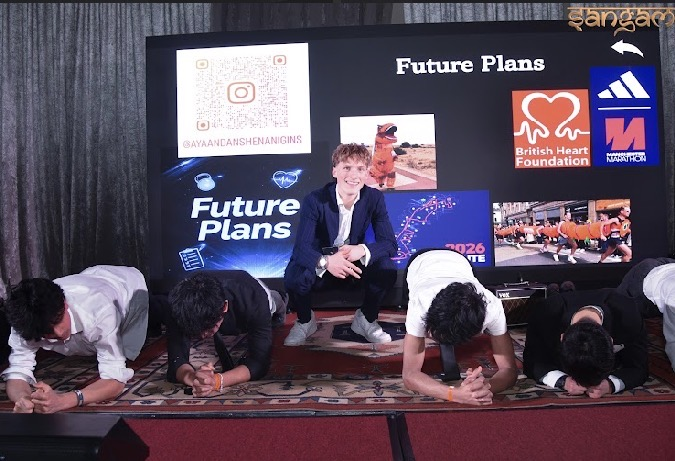
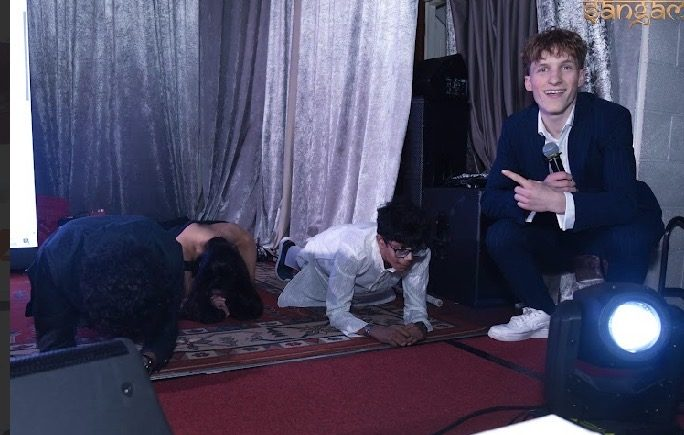
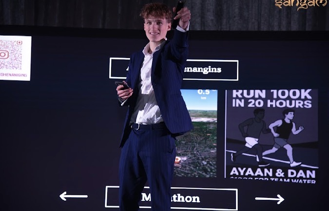
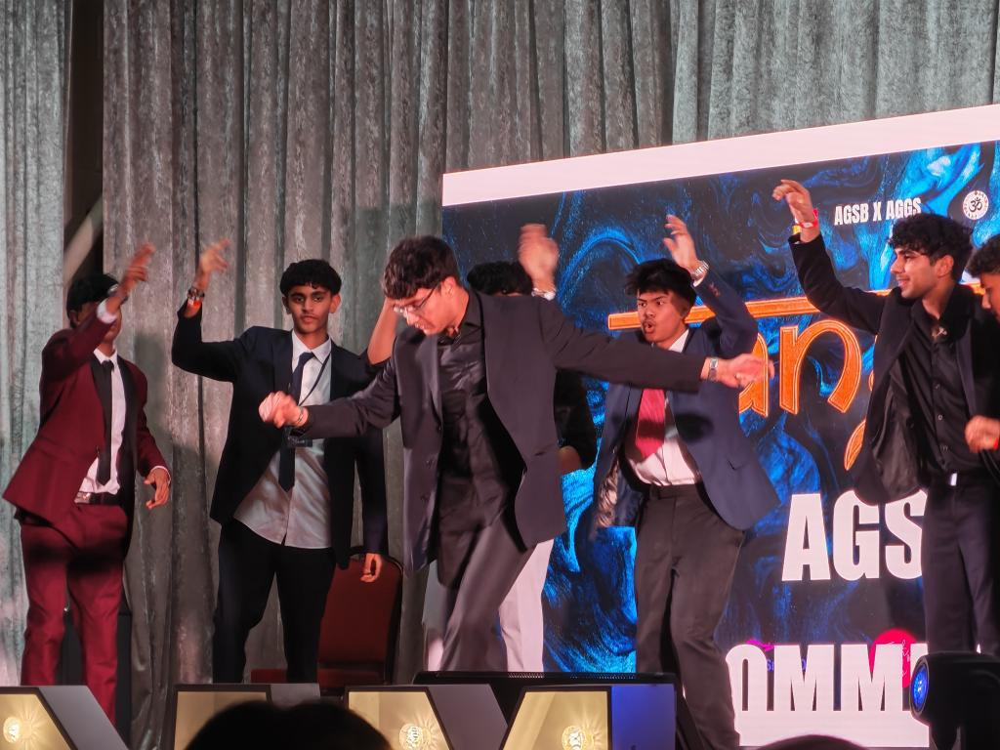
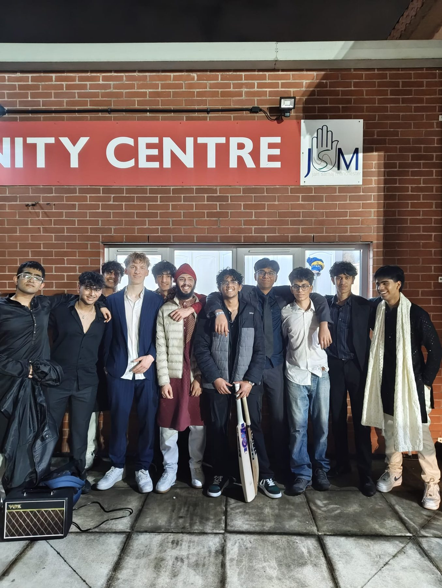
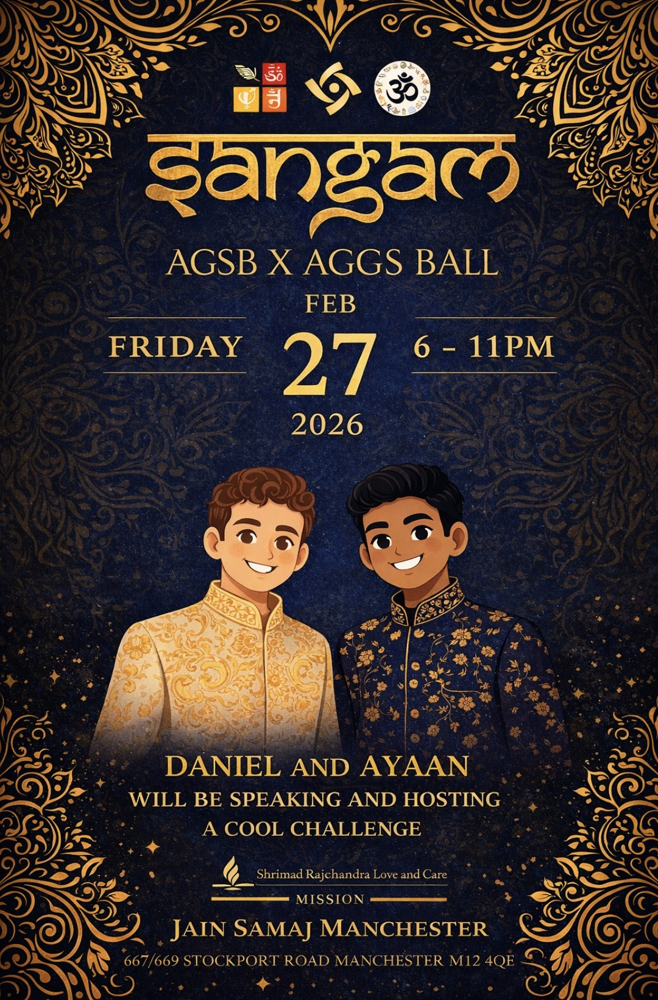
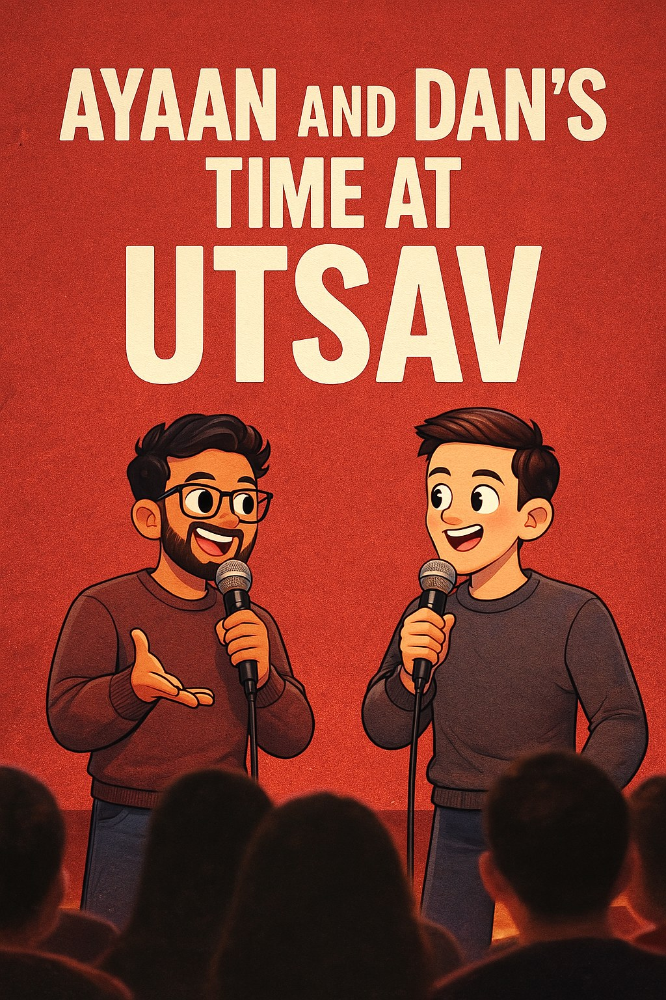

✕ CLOSE

If the cause is real and the content's good, you talk about it everywhere.— Spreading the word
Building a brand means getting off the road and in front of people.
Utsav (end of November) was where we promoted the 3,000 Push-Up Challenge — a live 40-second push-up demo to get the room donating to Teenage Cancer Trust.
Sangam — the AGSB × AGGS Ball at Jain Samaj Manchester on 27 February 2026 — was the big one. We took the stage, told the ADS story from 'how it started', ran a live challenge, and put the whole thing in front of a packed room.








Two mates, a growing brand, and a lot more suffering still to come.
Follow on Instagram